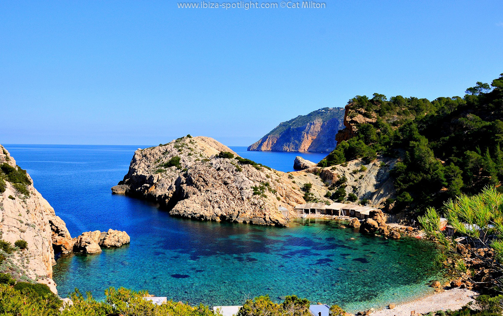

|
Coridele Ibiza Tenerife Madrid Barcelona Bilbao Valencia |
IbizaIbiza este o insulă din arhipelagul Baleare, situată în vestul Mării Mediterane, care aparține Spaniei. Capitala insulei este orașul Ibiza. În dialectul local insula și capitala ei se numesc Eivissa. Insula face parte din patrimoniul UNESCO, fiind remarcată pentru biodiversitate și cultură.[1] Face parte din arhipelagul Balearelor, fiind a treia insulă ca mărime, iar împreună cu vecina sa mai mică Formentera alcătuiește grupa Insulelor Pitiuse sau „Insulele pinilor”. Este numită și „Insula Albă” pentru arhitectura sa. Istoria ei începe în anul 654 î.Hr. cu cartaginezii, care au influențat cultura și tradițiile insulei. De atunci, cei 571 km² ai insulei au absorbit influențele culturale ale romanilor, bizantinilor, arabilor și crestinilor. Ultimii „invadatori” ai insulei sunt adepții curentului hippie și turistii care și-au lasat și ei influentele asupra acesteia. Capitala insulei este orașul Ibiza, situat în zona de sud-est a insulei; are o economie bazată pe turism și servicii. Este orașul principal al complexului insular și are statut de capitală, asigurând servicii de administrație pentru restul municipalităților și pentru Formentera. Numărul total de locuitori se ridică la circa 40.000, care iși gospodăresc o suprafață de 11 km², cu trei plaje principale: Figueretes, Talamanca și Playa d’en Bossa. Portul este un golf natural, unde s-au stabilit inițial primii locuitori ai insulei. Acesta este principala cale de acces spre oraș (socotind în această categorie și aeroportul). Municipalitatea insulei asigură vizitatorilor posibilitatea practicării diverselor activități culturale și sporturi - tenis, ciclism montan, golf, călărie, windsurfing, navigație, scufundări, quad, karting! |